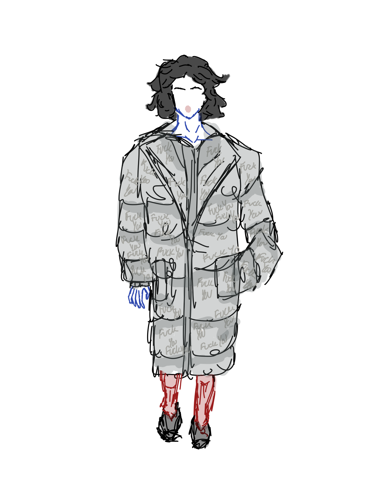
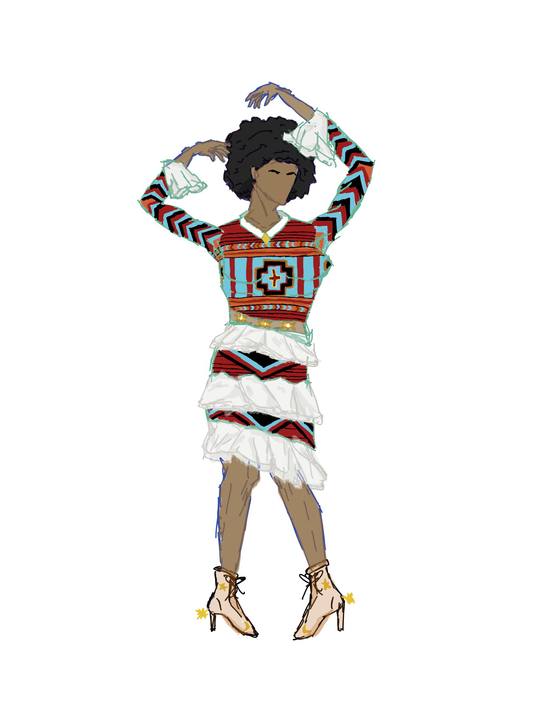
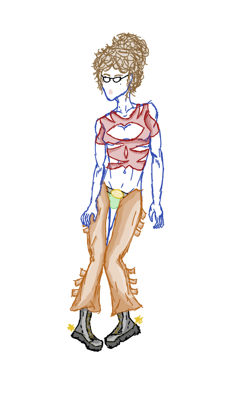
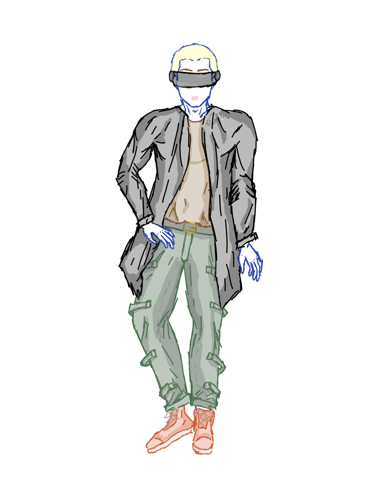
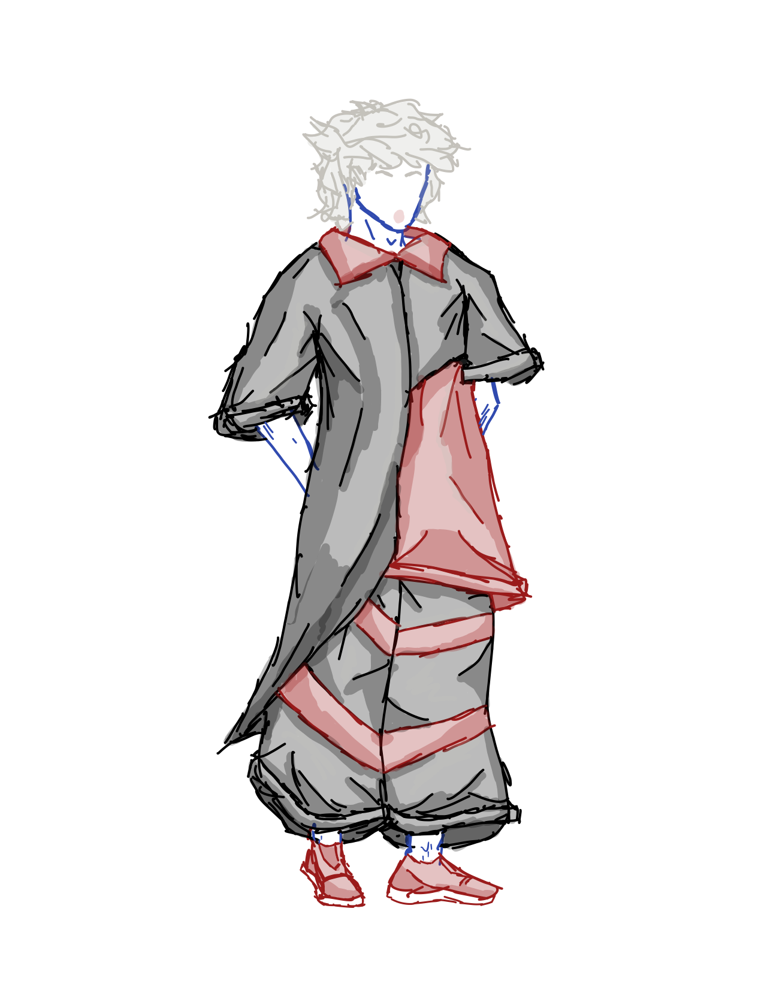
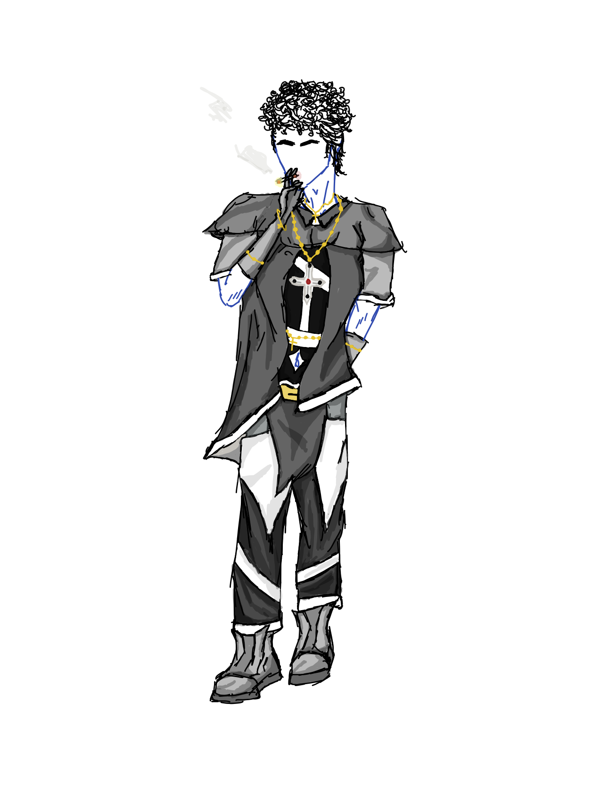
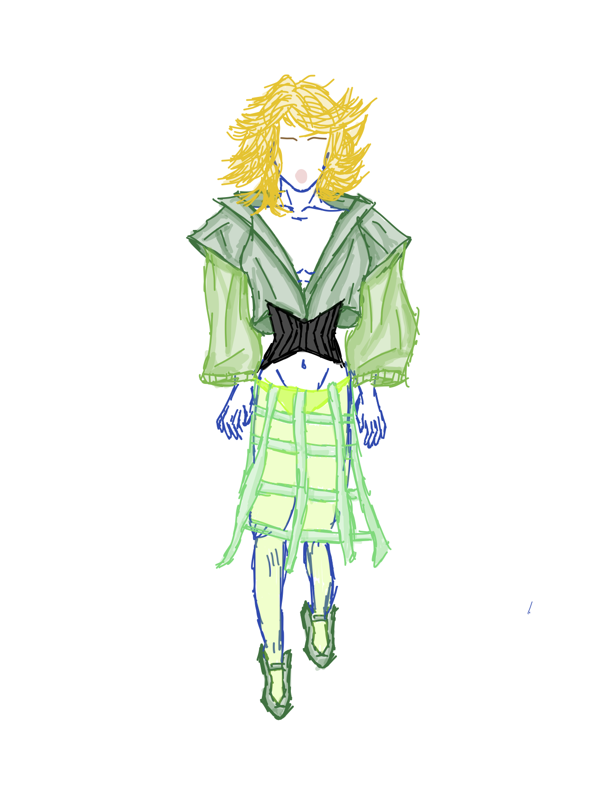
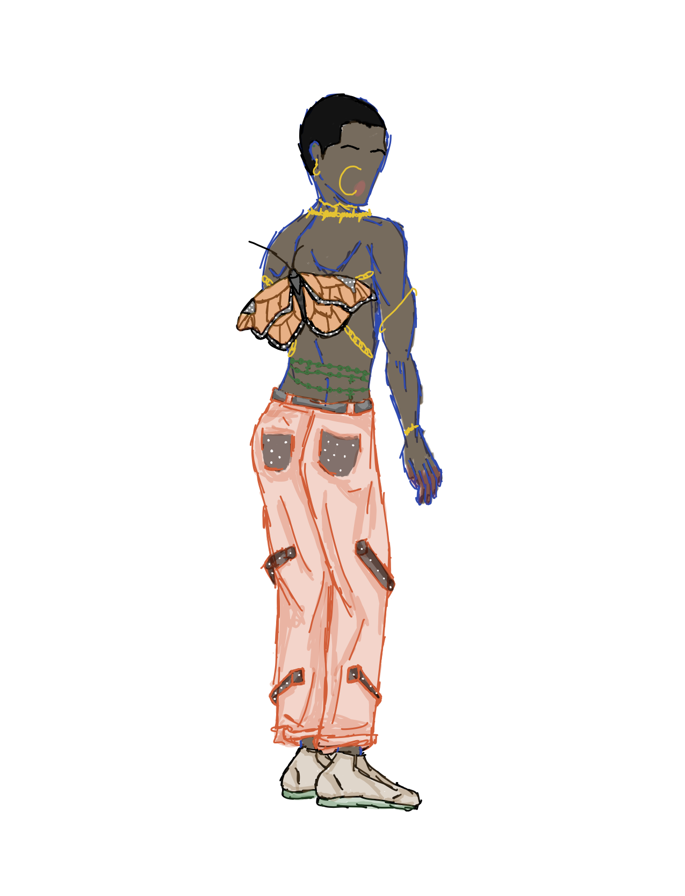

| Name: | Picture: | Description: |
|---|---|---|
| "F**k You" Puffa Hambok |  | Inspired by all the F**k You's Holden saw in Phoebe's school. |
| Navajo Blanket Dress |  | Inspired by Mr. Spencer's Navajo Blanket. |
| A Phony West |  | Comments on how phony Western fashion has become. |
| Central Park Duck |  | Inspired by the color pallete of ducks seen in Central Park. |
| Keep Your Kings in the Back |  | Inspired by the color of playing cards. Reference to Jane's habit when organizing her cards. |
| Romeo or Juliet? |  | Inspired by the habits worn by the nuns, who Holden met. The name references the discussion Holden had with them. |
| Green Sun |  | Inspired by Sunny's green dress. |
| Monarch |  | Mexican tradition states that monarch butterflies are the souls of ancestors returing to Earth. Inspired by this traditional belief, this outfit references Holden's brother Allie, who died from leukemia |